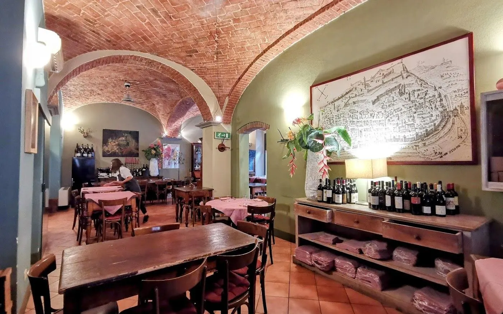

Quattrocento vini, sotto le volte.
I piatti della tradizione tortonese e una cantina da sfogliare, in una casa dell’Ottocento con le volte in mattoni.
Prenota: 0131 812468 La cucina
4,5 su Google · 936 recensioni (ottobre 2026)

Sito dimostrativo
 Vineria Derthona
Prenota
Vineria Derthona
Prenota
I piatti della tradizione tortonese e una cantina da sfogliare, in una casa dell’Ottocento con le volte in mattoni.
Prenota: 0131 812468 La cucina
4,5 su Google · 936 recensioni (ottobre 2026)
